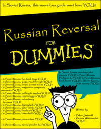
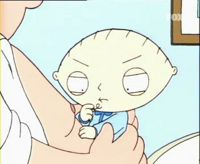

La Frikipedia:Infoboxes
 De: La Frikipedia, la enciclopedia extremadamente seria.
De: La Frikipedia, la enciclopedia extremadamente seria.
Las infoboxes son esas pequeñas plantillas para darnos los datos suficientes como para que no nos interese el resto del artículo. La información que se proporciona en las infoboxes es relevante para el artículo en cuestión y se muestra de una manera concisa, clara y fácil de entender. Las infoboxes debe ser rellenadas una vez un artículista las invoca según los parámetros que cada infobox específica contenga.
Se usan normalmente en países, películas, clubes de carretera... Si quieres ayudar en su creación, entra en la página del proyecto.
Las infoboxes deben ser
Plantilla: Infobox Nombre
Uso de la plantilla:
- {{Infobox nombre interno de la plantilla}}
Las Infoboxes AKA Cajasdeinformación
Plantilla: Infobox Película
Pilículas: Plantilla:Infobox película
- {{Infobox película}}
| Datos
|
Resultados
|
|
{{Infobox película
| título = Tetrix
| director = [[Pepito Piscinas]]
| productor = Manolín "el de la guasa"
| actores = [[El Litri de Utrera]]
| país = [[Espiña]]
| año = 2004
| presupuesto = Cuarenta piastras
| secuelas = [[Tetrix: Downloaded]] y [[Tetrix: Repetitions]]
}}
|
|
Plantilla: Infobox Isla
Isla: Plantilla:Infobox isla
- {{Infobox isla}}
| Datos
|
Resultados
|
|
{{Infobox isla
|nombre = Islas al azar
|image_isla= Islas Canarias 1.jpg
|descripción = Ejemplo de islas
|pais = Espiña
|archipielago = Pangea
|oceano = Uno azul
|superficie = La suficiente para montar un supermercado
|punto_mas_alto = La orilla del mar
|geologia = Suspensa
|capital = El volcán
|poblacion = 20 personas, 2 cangrejos y un pulpo
|gentilicio = Via Internerd
|presidente_del_cabildo = El pulpo
|municipios = El chiringito, la zona de los guiris, y el paseo marítimo
|notas = Cuidado con los... Agh
}}
|
| De la serie islas del mundo:
|
| Islas al azar
|
|
|
| Localización
|
| País
|
Espiña
|
| Archipiélago
|
Pangea
|
| Océano
|
Uno azul
|
| Geografía
|
| Superficie
|
La suficiente para montar un supermercado
|
| Punto más alto
|
La orilla del mar
|
| Geología
|
Suspensa
|
| Demografía
|
| Capital
|
El volcán
|
| Población
|
20 personas, 2 cangrejos y un pulpo
|
| Gentilicio
|
Via Internerd
|
| Otros datos
|
| Presidente del cabildo
|
El pulpo
|
| Municipios
|
El chiringito, la zona de los guiris, y el paseo marítimo
|
| |
Cuidado con los... Agh
|
|
Plantilla: Infobox Libro
Libros: Plantilla:Infobox libro
- {{Infobox libro}}
| Datos
|
Resultados
|
|
{{Infobox libro
|título=La Biblia
|foto=BibleWarningLabel.jpg
|escritor=Dios.
|editorial=San Tillana
|género=Terror en el 1º testamento y Coñazo en el 2º.
|colección=de crímenes contra la humanidad.
|año=30 d.C
|país=Madrid.
|idioma=Ingles.
|ediciones=Hay países en los que 0 y otros en los que 2 o 3.
}}
|
| La Biblia
|
|
|
| Escritor
|
Dios.
|
| Editorial
|
San Tillana
|
| Género
|
Terror en el 1º testamento y Coñazo en el 2º.
|
| Colección
|
de crímenes contra la humanidad.
|
| Año
|
30 d.C
|
| País
|
Madrid.
|
| Idioma original
|
Ingles.
|
| Ediciones vendidas:
|
Hay países en los que 0 y otros en los que 2 o 3.
|
|
Plantilla: Infobox Sistema Operativo
Sistemas operativos: Plantilla:Infobox so
- {{Infobox so}}
| Datos
|
Resultados
|
|
{{Infobox so
|nombre = OpenBSD
|foto = OpenBSD.png
|desarrollador = Truñotech.inc
|licencia = Cerrada como el super en domingo
|núcleo = Hasefroch + FreeBSD
|versión = 3.99b
|estado = En desarrollo chapucero
|cuelgues = 15
|virus = 15.000
|usuarios = Cualquiera lo suficientemente loco para ello
}}
|
| OpenBSD
|
|
|
| Desarrollador
|
Truñotech.inc
|
| Licencia
|
Cerrada como el super en domingo
|
| Núcleo
|
Hasefroch + FreeBSD
|
| Última versión
|
3.99b
|
| Estado actual
|
En desarrollo chapucero
|
| Número de cuelgues/min.
|
15
|
| Puertas abiertas a los virus
|
15.000
|
| ¿Que tipo de usuarios pueden usarlo?
|
Cualquiera lo suficientemente loco para ello
|
|
Plantilla: Infobox Empresa
Empresas: Plantilla:Infobox empresa
- {{Infobox empresa}}
| Datos
|
Resultados
|
|
{{infobox empresa
|nombre = Timofónica
|logotipo = Timofonica.jpg
|grupo = Timofónica
|dedicación = estafar a los pobres usuarios
|país = desierto del Serengheti
|fundación = 1400
|presidente = Alexander Graham Bell XVI
|maldad = tanta que se sale del maldímetro
|absorbidas = son infinitas pero la más importante es amena
|empleados = 2 o 3, el resto pertenecen a ETT o a Atento.
|atentados = el más pequeño es que todos los que se encuentras bajo su poder, están obligados a pagar por servicios infinitamente inferiores y 20 veces más caros que en otros países
|aconsejado = contratado por timofónica no se puede. En Atengo no NOOOO.
|boicotear = se aconseja y se hace pero se ríen de nosotros
|denuncias = tienen el record oficial
|web = http://www.diariohacker.com/2006/11/17/timofonica/
}}
|
| Timofónica
|
|
|
| Perteneciente al grupo:
|
Timofónica
|
| Se dedica a:
|
estafar a los pobres usuarios
|
| País de origen:
|
desierto del Serengheti
|
| Año de fundición:
|
1400
|
| Super Presidente:
|
Alexander Graham Bell XVI
|
| Nivel de maldad:
|
tanta que se sale del maldímetro
|
| Empresas absorbidas:
|
son infinitas pero la más importante es amena
|
| Número de empleados:
|
2 o 3, el resto pertenecen a ETT o a Atento.
|
| Atentados contra la humanidad
|
el más pequeño es que todos los que se encuentras bajo su poder, están obligados a pagar por servicios infinitamente inferiores y 20 veces más caros que en otros países
|
| ¿Se aconseja trabajar aquí?
|
contratado por timofónica no se puede. En Atengo no NOOOO.
|
| ¿Se recomienda el boicot?
|
se aconseja y se hace pero se ríen de nosotros
|
| Cantidad de denuncias:
|
tienen el record oficial
|
| Sitio web:
|
Página oficial de Timofónica
|
|
Plantilla:Infobox Fenómeno Sociológico
Para cualquier artículo de sociología: Plantilla:Infobox Fenómeno Sociológico
- {{Infobox Fenómeno Sociológico}}
| Datos
|
Resultados
|
|
{{Infobox Fenómeno Sociológico
|imagen_fenomeno = 360px-Russian_reversal_for_Dummies.png
|mensaje_fenomeno = Es imposible fallar con ese manual.
|nombre_cientifico = pedofilis maracuss violaaaduss
|principios = en una casita en la pladera con su padre q llegaba borracho y le pegaba a su madre con la escoba en la cabeza y después se lo pescaba junto con su abuelo de 80 años
|zona_origen = NO SE, NO ME ACUERDO (PERO POR HAY EN Los MATORRALES [OSEA UNA CASHA LOKA]EN CONCLUCION)
|consecuencias = empezar a follarse niños weones como TU!!!.
|simbolos_tipicos = mostrar al "peludo John" opara q entiendan mejor al niño sin "BRAZO,SIN PIERNAS,CON UN SOLO OJO" "EL CICLOPE"
|frikismo = malo para los niños
|gusta_a_los_normales = segun cuantos años tengas
|recomendable = En los jardines Infantiles
|maximo_exponente = DON TODOPODEROSO" BARNEY" <s>Ice, Ice Baby</s>
}}
|
| De la serie fenómenos sociológicos:
|
| donde los niños les gusta
|
| 
|
| Es imposible fallar con ese manual.
|
|
| Fenómeno sociológico
|
Russian Reversalitis
|
| Principios
|
Rusia Soviética
|
| Zona de origen
|
Moscow
|
| Consecuencias
|
empezar a creerse soviético.
|
| Símbolos típicos
|
La hoz y martillo te usan a TI!!
|
| Frikismo
|
algo
|
| ¿Gusta a la gente normal?
|
talvez
|
| ¿Recomendable?
|
En la Inversion Rusa, la infobox te crea a TI!!!
|
| Máximo exponente
|
Yakov Smirnoff Ice, Ice Baby
|
|
Plantilla:Infobox Anatomía
Partes del cuerpo: Plantilla:Infobox Anatomía
- {{Infobox Anatomía}}
| Datos
|
Resultados
|
|
{{Infobox Anatomía
|imagen_parte = Teta.jpg
|mensaje_parte = A veces la leche se corta o trae grumitos
|nombre_cientifico = Mamellus atractivus
|localizacion = Entre la garganta y el ombligo de las [[mujer]]es
|funcion_principal = Hacer que los [[hombre]]s pierdan la cabeza
|funcion_secundaria = Alimentar a los <s>pokémones</s> [[bebé]]s
|aspecto_general = Redondicas con un pezón en medio
|numero_habitual = Dos, aunque hay quienes tienen tres u más...
|vital_no_vital = ¡Imprescindible para la sesualidá!
|frikismo = Rompe la tabla
|ejemplo_poseedor = [[Pamela Anderson]]
}}
|
| De la serie anatomía para todos:
|
| Teta
|
| 
|
| A veces la leche se corta o trae grumitos
|
|
| Nombre científico
|
Mamellus atractivus
|
| Localización
|
Entre la garganta y el ombligo de las mujeres
|
| Función principal
|
Hacer que los hombres pierdan la cabeza
|
| Función secundaria
|
Alimentar a los pokémones bebés
|
| Aspecto general
|
Redondicas con un pezón en medio
|
| Número habitual
|
Dos, aunque hay quienes tienen tres u más...
|
| Vital / no vital
|
¡Imprescindible para la sesualidá!
|
| Nivel de frikismo
|
Rompe la tabla
|
| Ejemplo de poseedor
|
Pamela Anderson
|
|
Resto de ejemplos
Entra en La Frikipedia:Infoboxes parte 2 o en La Frikipedia:Infoboxes parte 3
Otras infoboxes
Autor(es):
- Nexo
- CartDestr
- JALAJANDRO
- MURO DE AGUAS
- Frikiman
- Aque
- Epikurolibre
- Nadaquever
- Lljosemll
- Prototype
Frikipedia 2005-2016, Licencia
GFDL 1.2 - Extraído por FrikiLeaks